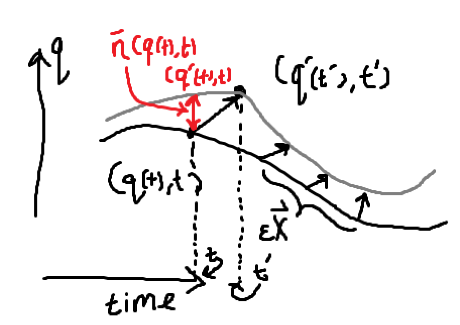

Symmetry and Relativity (B2)
Transformations in Noether's theorem
In Noether's theorem, we consider a transformation of coordinates described by: $$t' = t + \epsilon \tau(q_k(t), t)$$ $$q_i'(t') = q_i(t) + \epsilon \eta_i(q_k(t), t)$$
There is a nice geometrical way to think about this. Let us consider the configuration space with coordinate axes $q_1, \dots, q_N, t$. The evolution of our system may be described by a trajectory (line) in configuration space. Consider the vector field in configuration space given by: $$\vec{X} = (\eta_1(q_k, t), \dots, \eta_N(q_k, t), \tau(q_k, t))$$ Now, imagine that we displace each point on our original trajectory by a small amount $\epsilon \vec{X}$. This produces a new trajectory in configuration space that is described by $q_1'(t'), \dots, q_N'(t')$.
Note that in our original equations, $q_i'(t')$ is defined in terms of $t$, but its argument is $t'$. The reason is that after displacement, the point $(q_1', \dots, q_N')$ is now associated with the time $t'$, since that is where the $t$ associated with the original $(q_1, \dots, q_N)$ was displaced to.
Here's how everything looks geometrically:

In the B2 notes, the quantity $\bar{\eta}_i$ was defined to be the change in $q_i$ due to $\vec{X}$ holding time constant. This is the red segment in the diagram.
Now, imagine that we let our trajectory "flow" for a bit under the vector field $\vec{X}$. This turns it from the black trajectory to the gray trajectory above. We say that the transformation is a symmetry if the action along the gray trajectory is the same as the action along the black trajectory. Note that unlike in the derivation for the Euler-Lagrange equations, the endpoints of our trajectory can, and will change under the flow. Note, also, that we are making the above statement for all trajectories, not just the trajectories of least action. However, specialising the statement to trajectories of least action (satisfying Euler Lagrange equations) tells us about the existence of conserved quantities along these trajectories. For every such flow we can find, we get a conserved quantity along trajectories of least action. Is that obvious? I don't think so.